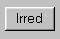
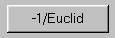
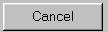
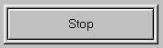

Общие сведения о программе "Euclid"
Программа "Euclid" предназначена для проведения вычислений в поле,
образованном, как расширение поля Fp, где p-простое.
Элементы поля
здесь представляются как элементы фактор-кольца Fp[x]/g(x),
где Fp[x] -
кольцо многочленов над полем Fp, а g(x) - неприводимый многочлен. Таким
образом, элементы поля в программе представляются многочленами степени
строго меньше, чем степень многочлена g(x).
Многочлены в программе задаются своими коэффициентами. По умолчанию
считается, что нумерация коэффициентов производится с младших степеней
(так называемое "little-endian" представление),
то есть, многочлен x^3 + x + 1, запишется как (1 1 0 1), где здесь и
далее символ "^" означает возведение в степень. Однако, имеется
возможность изменения этого представления на "big-endian", где
коэффициенты при старших степенях записываются первыми.
Программа предоставляет следующие возможности:
Выбор многочлена g(x), если таковой не задан пользователем. Это
возможно двумя способами:
- Подбором неприводимого многочлена заданной степени
- Нахождением всех примитивных многочленов заданной степени, для
последующего использования одного из них в качестве многочлена
g(x)
Проверка заданного пользователем многочлена g(x) на неприводимость
Документирование производимых операций в файле регистрации (по
желанию пользователя). По умолчанию регистрация производится автоматически.
Чтение многочленов-операндов из файла и запись результатов
вычислений в файл.
Выполнение в заданном конечном поле следующих арифметических дейсвий:
В трех, описанных выше, операциях, при отсутствии многочлена g(x),
производятся обычные вычисления для многочленов в кольце Fp[x].
- Деление: . Если задан неприводимый
многочлен g(x), то производится деление в конечном
поле Fp[x]/g(x). Если неприводимый многочлен
g(x) не задан, то производится обычное деление многочленов и в
поле результата res (см. описание
интерфейса пользователя) выводится частное и остаток в виде строки,
например, "quot = 1 0 1 1 ; rem = 1 ". При этом важно, чтобы степень
делимого была больше степени делителя, иначе деление не будет выполнено
а на экране появится сообщение об ошибке. Если многочлен g(x) не является
неприводимым, то деление (впрочем, как и все другие вычисления) будут
проведены (возможно даже без ошибок типа делния на ноль) но результат,
как логично предположить, будет не верен. Для проверки заданного g(x)
на неприводимость служит кнопка
.
- Нахождение обратного элемента в конечном поле Fp[x]/g(x)
для многочлена, заданного в поле #1: .
Если не задан многочлен g(x), то
производится реализация расширенного алгоритма Евклида, для многочленов в #1 и в
#2. Результат записывается в поле результата (res), в следующем виде:
"A = 1 ; B = 1 0 1 1 ; NOD = 1". Данный ответ следует интерпретировать
следующим образом: NOD = A*f1 + B*f2, где f1 - многочлен, заданный в
поле ввода #1, а f2 - заданный в поле #2, А и В - многочлены соответствующие
указанной в (res) записи.
- Затянувшиеся вычисления можно прервать кнопкой
 в случае поиска всех примитивных
или неприводимых многочленов, или кнопкой
 для всех остальных случаев.